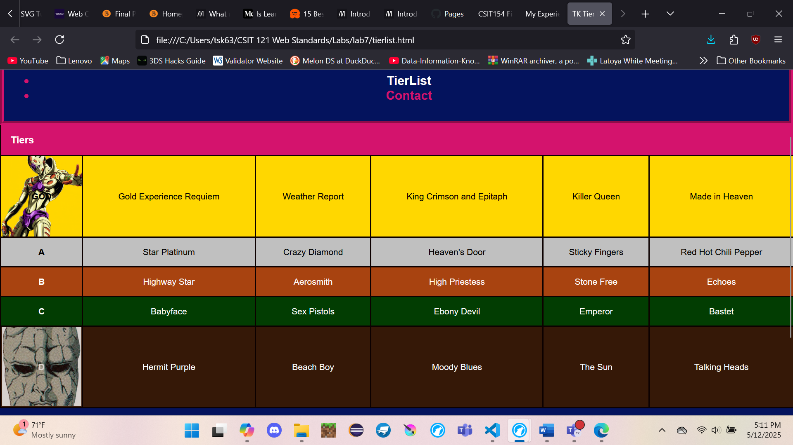

CSS
I couldn't believe the steep learning curve that I would encounter with this. Applying basic colors to text, the background, along with adjusting text sizes and decorations was simple enough to comprehend. The real pain for me was inserting images and applying animations. The former was especially killing me since I feel that it should've been so simple. I thought it was simply copy the image file and paste it into the HTML where images go; turns out that wasn't the case at all. I'll use the table below to showcase how to properly insert an image from a folder within the same folfer as your file.
| Code | Correct? | Explanation |
|---|---|---|
| finallab/pictures/matrix.jpg | No | The image won't show up in this file if you do this. The HTML will think you are trying to call an image from an external folder. |
| pictures/matrix.jpg | Yes | This is the correct way to do it. The HTML will look for the image in the same folder as this file. |
Link To My Breakthrough
Ironically, it was the seventh lab assignment where I finally managed to figure out how to implement images into HTMLs.
